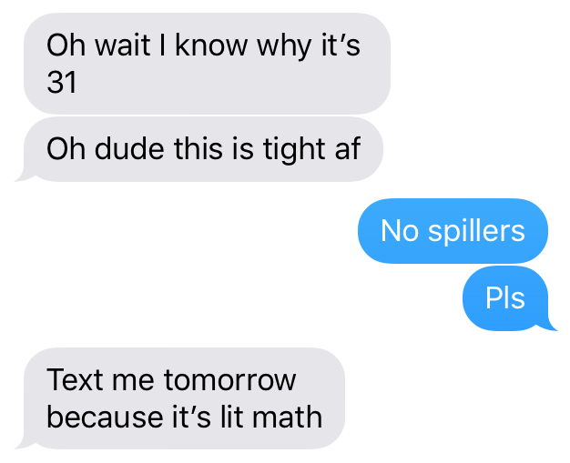

mille portes
Mon amie Maria nous a posé cet problème pendant un long tour de voiture:
Mille gens se trouvent devant mille portes fermées. La première personne ouvre chaque porte. Puis, la seconde personne ferme toutes les autres portes. Ensuite, la troisième va à chaque troisième porte et la "changer l'état" (c'est-à-dire, ouvrir si elle est fermée, fermer si elle est ouverte). Alors la quatrième personne change l'état de chaque quatrième porte, la cinquième personne change l'état de chaque cinqiuème porte, et ainsi pour toutes les mille personnes.
Combien de portes sont ouvertes dès qu'ils ont fini?
I couldn't figure it out, and neither could my other friend Drew, who was also on the road trip.
But when Drew got home he wrote a program to
solve it. It turns out only 31 doors
are open when it's all said and done. This is kind of remarkable — nearly all the doors end up closed. He texted me saying he had figured out why.

The math is actually pretty lit so you should try figure it out for yourself before
you read ahead (Hint: think about how many times you need to flip a door for it to be
open at the end).
Okay so we start by thinking of how many times a door needs to be flipped to be open at the end. It turns out open doors are flipped an odd number of times and closed doors are flipped an even number of times. This makes sense when we think about how many times we need to flip a door to change it from its original, closed state.
There's a nice mathematical way of thinking of how many times a door is flipped: if we label all the doors from 1 to a 1000, the number of times door n is flipped is the number of factors n has. (This is the key breakthrough I made after writing my own program.)
So why are there only 31 doors left open? Because the only doors that are open correspond to numbers with an odd number of factors, i.e., perfect squares, and there just aren't that many of those. Tight af.
(5/15/19)